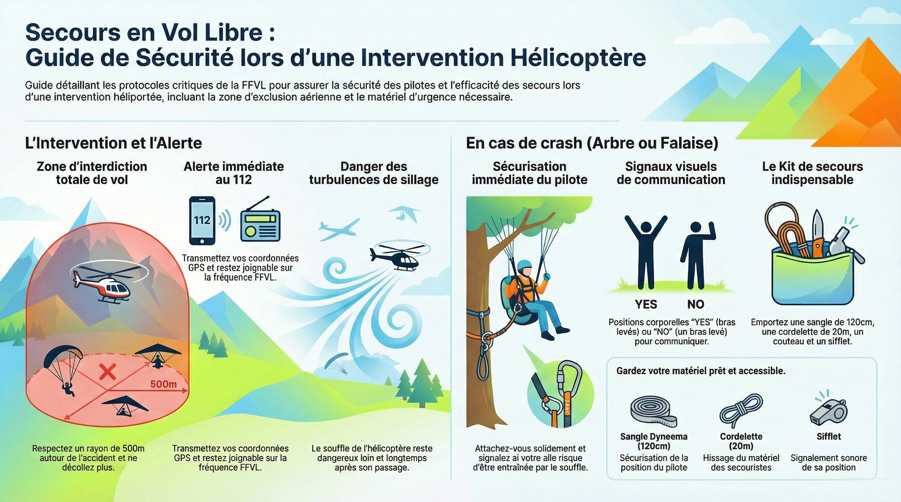

Guide de Sécurité et de Secours
La Fédération Française de Vol Libre (FFVL) a établi des consignes strictes pour protéger les pilotes et faciliter le travail des secouristes. Voici les règles essentielles.
Intervention d'un hélicoptère
Priorité absolue aux secours : Lorsqu'un hélicoptère approche, vous ne devez plus décoller pendant toute la durée de l'intervention.
- Zone d'interdiction : Respectez 500m horizontalement autour de l'accident. Interdiction illimitée en hauteur.
- Pourquoi ? Pour permettre les manœuvres et éviter les turbulences de sillage, extrêmement dangereuses.
Comment donner l'alerte ?
Gardez toujours votre téléphone accessible dans votre sellette. En cas d'urgence :
- Appelez le 112.
- Basculez votre radio sur la fréquence FFVL (143,9875 MHz) pour être joingnable par l'équipage.
- Transmettez votre position GPS exacte.
- Restez attentif et prêt à répondre aux secouristes.
Branché ou en falaise
La règle d'or : ne prenez aucun risque en essayant de redescendre seul.
- Si vous avez besoin d'aide : Attachez-vous pour vous sécuriser. Utilisez le signal visuel international (bras levés en "Y").
- Si vous n'avez PAS besoin d'aide : Appelez quand même le 112 pour signaler votre position et éviter une opération inutile. Utilisez le signal de refus (bras en diagonale).

Le Kit de secours personnel
Équipement de survie recommandé par la FFVL, toujours accessible :
Sangle & Mousqueton
Dyneema (120 cm) pour se "vacher" et sécuriser sa position.
Cordelette de 20m
Pour hisser le matériel des secouristes jusqu'à vous.
Couteau
Pour lester la cordelette ou se dégager en urgence.
Sifflet
Pour signaler facilement votre position par le son.